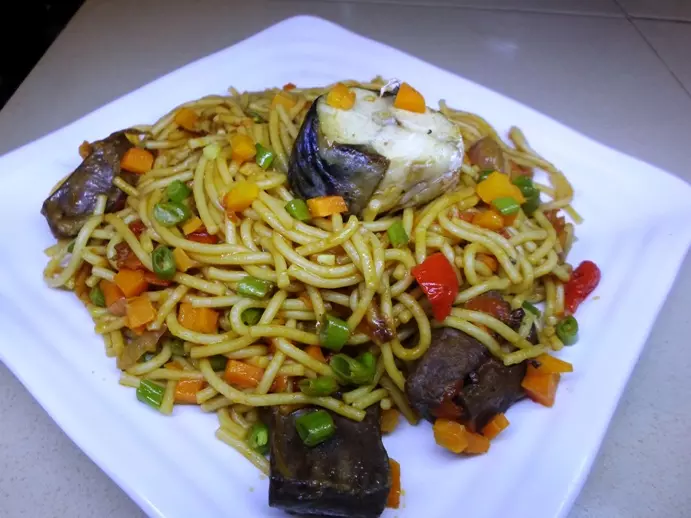
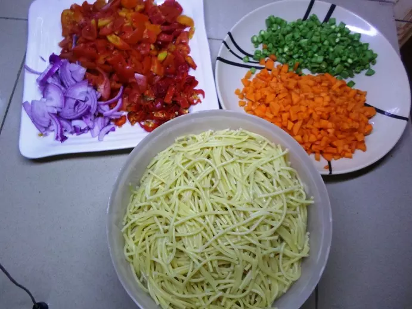

Here is a delicious spaghetti Jollof, one of the most popular foods in
Nigeria. Spaghetti is food to more than a million Nigerians. We could
make this Jollof out of it or just boil it and serve with stew/tomato
sauce and meatballs. It is actually chicken… since we don’t eat lots of
meatballs in Nigeria.

fig1: Spaghetti
I have tried several other recipes and this proves to be the best so far
and I am sure you are going to love it. Partly because of the use of
carrots and green beans, ingredients that I consider to be highly
nutritional.
Ingredients for Spaghetti
Spaghetti (1 sachet)
1 small tin tomatoes.
1 cups of sliced onions
Fresh tomatoes and Pepper
Ground Crayfish
3 seasoning cubes
Salt to taste
1 cup of sliced carrot
Sliced green beans (1 cup)
200ml vegetable oil about
1kg Meat/fish
How To Prepare Spaghetti
Cut/chop the carrot, green beans, and green pepper to desirable sizes.
Below is the image of parboiled spaghetti in a bowl, carrot and green
beans in a plate, sliced tomato, onions, and pepper. I used a
combination of fish and cow-kidney while making this spaghetti meal.
Ingredients for spaghetti.

Parboil the meat and fish with all the necessary ingredients I like to
use just 2 seasoning cubes, a teaspoon of salt and a half cup of
sliced onions. Parboiling the meat alone is a good practice, you get
the chance to extract the stock from the meat which is an integral
part of Nigerian cooking. I like to parboil the meat/fish while making
any Nigerian food with a cup of water and all the necessary
ingredients. This practice will enable you to end up with very tasty
meat and also provide the meat stock (meat water) that is used in
making most Nigerian foods. You can learn more about this practice
later. Using an electric blender, grind the crayfish and also blend
the tomatoes/pepper together.